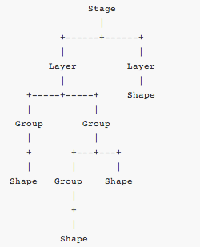

KineticJS is an HTML5 Canvas JavaScript framework
It enables high performance animations, transitions, node nesting, layering, filtering and caching
It enables event handling for desktop and mobile applications,
You can draw things onto the stage, add event listeners to them, move them, scale them, and rotate them independently from other shapes to support high performance animations
Kinetic stage is made up of user defined layers
Each layer can contain shapes, groups of shapes, or groups of other groups. The stage, layers, groups, and shapes are virtual nodes, similar to DOM nodes in an HTML page

Object Oriented API
Node nesting and event bubbling
High performance event detection
Layering support
Nodes can be converted into data URLs, image data, or image objects
Nodes can be converted into data URLs, image data, or image objects
Animation and Transition support
Drag and drop with configurable constraints and bounds
Ready to use shapes including rectangles, circles, images, text, lines, polygons and custom shapes
Selector support e.g. stage.get('#foo') and layer.get('.bar')
Desktop and mobile events
Event driven architecture which enables developers to subscribe to attr change events, layer draw events, and more
And Much more...
Kinetic stage is made up of user defined layers
Each layer can contain shapes, groups of shapes, or groups of other groups. The stage, layers, groups, and shapes are virtual nodes, similar to DOM nodes in an HTML page
Rectangles, circles, images, text, lines, polygons and custom shapes
Opacity
Fill
Stroke
Shadow
Use the Kinetic.Animation constructor which takes two arguments
1 Updating function
2 And an optional layer, or array of layers, that will be updated with each animation frame.
/
#